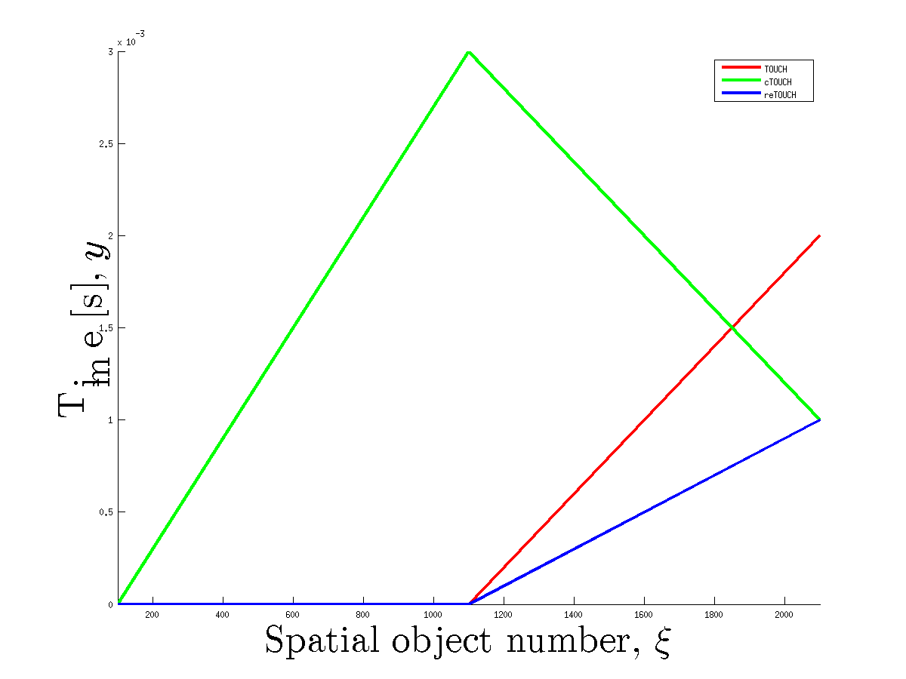

- The figure shows dependacy of joining time of TOUCH-like algorithms on numbers of objecs in sets.

- The figure shows the dependancy of number of objects that are closer than epsilon on epsilon.The red point indicates the optimal singular value number.